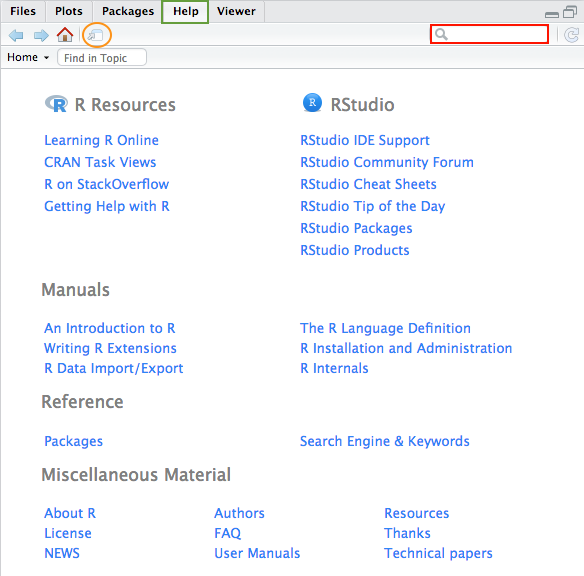
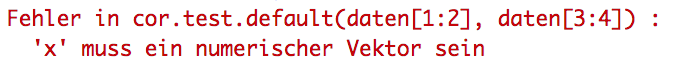
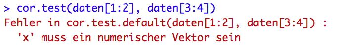
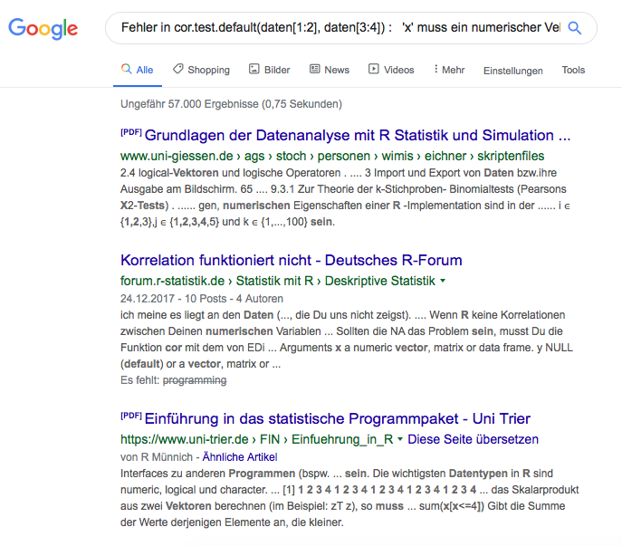

Chapter 6 Fehlermeldungen
Beim Arbeiten mit R wird es früher oder später einmal dazu kommen, dass wir in der Konsole eine Fehlermeldung ausgegeben bekommen.
Generell kann man in R drei verschiedene Meldungen (Conditions) erhalten:
- error:
Durch Fehler wird die Ausführung der Funktion unterbrochen. - warning
Im Gegensatz zu echten Fehlern (errors) wird die Ausführung des Codes bei warnings nicht unterbrochen. Warnmeldungen dienen dazu, die Aufmerksamkeit des Benutzers auf potentielle Probleme zu lenken. Im Unterschied zu errors kann man mehrere Warnungen von einer Funktion erhalten. - message
Geben Informationen dazu, was eine Funktion (zusätzlich) gemacht hat.
Wir konzentrieren uns in diesem Abschnitt auf ersteres: Fehlermeldungen, die unsere Arbeit in R anhalten lassen und nach einer Lösung verlangen.
Fehlermeldungen können unterschiedliche Ursachen haben. Häufig sind es Tipp- oder Syntaxfehler, aber auch Probleme mit Datentypen (z.B. eine Funktion erfordert einen anderen als den genutzen Datentyp) und Paketen (z.B. Laden des Paketes einer Funktion vergessen) kommen häufiger vor.
Fehlermeldungen sind häufig nicht einfach zu verstehen. Das liegt u.a. daran, dass EntwicklerInnen von Paketes jeweils eigene Fehlermeldungen für die enthaltenen Funktionen formulieren. Deswegen folgen diese zumeist keinem einheitlichen Muster und sind teils schwer zu verstehen.
Im Folgenden gehen wir uns zuerst darauf ein, welche Hilfe uns RStudio gibt, um Fehler zu vermeiden. Anschließend schauen wir uns an einigen konkreten (Syntax-)Fehlermeldungen an, wie man diese verstehen kann. Danach lernen wir, wie wir Suchmaschinen sinnvoll nutzen können, um Lösungen für unsere Fehlermeldungen zu finden.
Beispieldatensatz für dieses Kapitel
Für das vorliegende Kapitel werden wir uns einen kleinen Datensatz generieren, mit dem wir arbeiten werden.
# Matrix erstellen
daten <- matrix(c(0, 1, 3, 2, 2,
3, 2, 0, 3, 1,
3, 0, 1, 3, 1,
1, 2, 1, 0, 3), nrow = 5, ncol = 4)
# in Dataframe umwandeln
daten <- data.frame(daten)
# Spalten benennen
colnames(daten) <- c("Var_1", "Var_2", "Var_3", "Var_4")## Var_1 Var_2 Var_3 Var_4
## 1 0 3 3 1
## 2 1 2 0 2
## 3 3 0 1 1
## 4 2 3 3 0
## 5 2 1 1 36.1 Tools die uns helfen, Fehler zu vermeiden
Bevor wir uns dem Verstehen von konkreten (Syntax-)Fehlermeldungen widmen und anschauen, wie wir effizient im Internet suchen können, schauen wir uns zwei Hilfsmittel an, die uns die Entwicklungsumgebung RStudio gibt, um Fehler zu vermeiden.
6.1.1 R-Dokumentation
Wenn wir eine uns noch unbekannte Funktion nutzen (aber auch wenn wir aus einer Fehlermeldung nicht schlau werden) können wir die Dokumentation nutzen. Diese können wir in RStudio im unteren rechten Panel unter Help öffnen. In das Suchfeld geben wir den Namen der Funktion ein.
Alternativ können wir die Hilfefunktionen ? oder help() nutzen (z.B. ?matrix oder help(matrix)).
Mit Klick auf das eingekreiste Icon kann man sich die Hilfe-Seite auch in einem extra Fenster anzeigen lassen.

Wir bekommen hier (zumeist) folgende Informationen: aus welchem Paket die Funktion ist (oben links in { }), was die Funktion macht (Description), die Funktionsdefinition ggf. mit Defaults (Usage), ihre Parameter mit jeweils gültigen Argumenten (Arguments), weitere Details zur Nutzung (Details), ähnliche Funktionen (See also) und Beispiele zur Nutzung (Examples).
Was sind Parameter, Argumente und Defaults?
Parameter bezeichnet die (formalen) Variablen einer Funktion (z.B. nrow aus matrix()), denen wir unsere (tatsächlichen) Argumente (z.B. 3), d.h. unseren Input, übergeben. Default bezeichnet ein voreingestelltes Argument (z.B. nrow=1).
Ohne explizite Spezifikation des Parameters unsererseits wird (wenn vorhanden) der Default verwendet. Wir könnten natürlich auch ein anderes (als das voreingestellte) Argument festlegen.
Funktionen, die ausschließlich Parameter mit Defaults besitzen, (z.B. matrix()) werden auch ohne Spezifikation ausgeführt. Funktionen mit (min. einem) Parameter ohne Default (z.B. mean()) werden ohne Spezifikation dieser nicht ausgeführt (wir müssen dem Parameter x einen Vektor, von dem wir den Mittelwert berechnen wollen, übergeben). Mehr Informationen zu Funktionsdefinition und etwaigen Defaults finden wir im Abschnitt Usage in der R-Dokumentation.
Mehr Informationen zum Aufbau von Funktionen finden wir in der Einführung in R
Eine detailliertere Einführung zur Nutzung der Dokumentation befindet sich im Kapitel Einführung in RStudio.
6.1.2 Code Diagnostik
Achtung: Wir können die Code Diagnostik nur nutzen, wenn wir unser Skript gespeichert haben.
Vor Ausführung unseres Codes erhalten wir Hinweise, beispielsweise wenn Argumente einer Funktion fehlen oder unerwartete Zeichen auftauchen.
Der Fehler wird unterstrichen und es erscheint außerdem ein Symbol links neben der Zeilennummerierung. Zusätzlich erhalten wir einen ausformulierten Hinweis, wenn wir mit der Maus über das Symbol fahren.


Lösung
Das dritte Argument, welches nach dem zweiten Komma in c() folgen sollte, ist leer. In unserem Beispiel sind die Argumente von c() Zahlen (zur Indexierung der Spalten vom Dataframe daten). Wenn wir die Spalten 1, 2 und 3 extrahieren wollten, würden wir das überflüssige Komma löschen: daten[,c(1,2,3)]


Lösung
Unser Code endet mit einer schließenden runden Klammer, welche kein öffnendes Pendant hat. Außerdem hat unsere öffnende eckige Klammer kein abschließendes Pendant. Wahrscheinlich haben wir uns vertippt und anstatt einer schließenden eckigen Klammer eine schließende runde Klammer eingefügt. So würde der richtige Code aussehen: daten[,c(1,2,3)]
Auf dieser Seite wird die Möglichkeiten der Code Diagnostics noch detaillierter erklärt und wir erhalten eine Anleitung dazu, wie wir verschiedene Einstellungen tätigen können (in der oberen Menüleiste über Tools > Global Options > Code > Diagnostics).
6.2 Fehlermeldungen verstehen
Schauen wir uns einmal den typischen Aufbau von Fehlermeldungen an:

Die Information vor dem Doppelpunkt gibt uns an, in welcher Funktion der Fehler steckt; die Information nach dem Doppelpunkt gibt Aufschluss über die Art des Fehlers. Zweiteres ist für die Fehlersuche (zumeist) von großer Bedeutung.
Im Folgenden konzentrieren wir uns auf eine Art von Fehler, mit der vor allem AnfängerInnen häufig konfrontiert sind: Syntaxfehler.
Syntaxfehler sind Fehler, die durch eine Verletzung des formalen Aufbaus einer Funktion zustande kommen. Manchmal entstehen sie auch nur durch Vertippen.
Syntaxfehler können zumeist relativ einfach durch Korrigieren der fehlerhaften Syntax, i.d.R. dem Einfügen oder Entfernen von bestimmten Zeichen, zumeist Kommata oder Klammern, gelöst werden.
Schauen wir uns nun einige Beispiele an:
Wenn ein oder mehrere Zeichen überflüssig sind bzw. fehlen, dann bekommt man Unerwartete(s) '...' in "..." ausgegeben. Hierbei teilt uns die Meldung mit, wo der Fehler liegt: In den Anführungszeichen "..." wird nur ein Teil des Codes ausgegeben und der Fehler ist zumeist das zuletzt ausgegebene Zeichen (oder es liegt unmittelbar davor).

Lösung
z.B. daten[2]
Damit extrahiert man auch die zweite Spalte aus daten, aber hier wird der Name der Spalte (Variable) nicht mit ausgegeben. Außerdem werden die Elemente der Spalte zeilwenweise wiedergegeben.
Wenn mehrere Syntaxfehler enthalten sind, und man nicht gleich alle erkennt, muss man diese nach und nach beseitigen.

Lösung
z.B. daten[2]
Zuerst wurde nur auf das fehlerhafte $ hingewiesen. Nachdem dieses gelöscht wurde, wird erst auf das falsche ) verwiesen.
Manchmal bekommt man auch nur unerwartetes Symbol in: "..." ausgegeben. In den Anführungszeichen "..." wird hier nur der Teil des Codes ausgegeben, in dem der Fehler ist, nicht aber (wie oben), auch das problematische Zeichen.

Lösung
z.B. daten[,2] oder daten[2]
Hier wurde nicht bemerkt, dass bei der ersten Funktion daten[,2 noch ein ] fehlt und einfach schon die nächste Funktion daten[,3] ausgeführt. So nahm R an, dass beide zusammen gehören würden.
Wenn man Komma-Fehler hat, bekommt man beispielsweise folgende Meldung angezeigt.

Lösung
z.B. daten[c(1,2)] oder daten[c(1,2,3)]
Hier weist uns R darauf hin, dass das dritte Argument, welches nach dem zweiten Komma folgen sollte, leer ist. In Abhängigkeit davon, welche Spalten aus Daten extrahiert werden sollen, löscht man das Komma (um Spalte 1 und 2 zu extrahieren) oder man ergänzt einen weiteren Spaltenindex (z.B. 3; um Spalte 1, 2 und 3 zu extrahieren).
6.3 Suchen im Internet
Nun gibt es auch Fehlermeldungen, die wir nicht auf Anhieb verstehen. Dafür kann es vielfältige Ursachen geben. Wenn wir schon in der R-Dokumentation nachgeschaut haben und trotzdem noch ratlos sind, können wir im Internet nach Hilfe suchen. Wir können dafür Suchmaschinen direkt spezielle Foren nutzen.
Hierbei gibt es nicht den einen Weg, fündig zu werden. Häufig gibt es eine Fehlermeldung, die bei verschiedenen Problemen (mit unterschiedlichen Funktionen) angezeigt wird. Dann muss man filtern, welche Seite für das eigene Anliegen relevant sein könnte. Es kann ebenso möglich sein, dass es zu manchen Problemen einfach noch keine Lösung gibt. Dieser Fall ist eher seltener und tritt vor allem bei neueren oder seltener genutzen Paketen auf.
Im Folgenden schauen wir uns einige wichtige Aspekte an, auf die man achten sollte, wenn man im Internet nach Lösungen zu Fehlermeldungen sucht.
Dafür schauen wir uns folgendes Beispiel an: Wir wollen eine Korrelationstabelle erstellen, in der wir aus daten die ersten beiden Spalten [1:2] mit den letzten beiden Spalten [3:4] korrelieren. Dazu wurde die Funktion cor.test() genutzt. Wir bekommen folgende Fehlermeldung:

a) Passende Suchbegriffe nutzen
Sinnvoll ist es im Suchtext drei Aspekte miteinzubeziehen:
- das Programm, mit dem es Probleme gibt
- die Funktion, mit der es Probleme gibt
- auch ersichtlich an der Information vor dem Doppelpunkt
- Ausschnitte aus der Fehlermeldung
- von den Informationen nach dem Doppelpunkt
Unsere Suche könnte folgendermaßen aussehen:

Anstatt eine globale Suchmaschine wie google oder ecosia zu nutzen, kann man auch eine spezifisch für Anliegen in R konzipierte Suchmaschine wie rseek nutzen. Dann kann man im Suchtext den Namen des Programms weglassen, beispielsweise nur cor.test x numerischer Vektor suchen.
b) Ergebnisse filtern
Nachfolgend sehen wir die ersten fünf Ergebnisse der Suche.

Mit Ausnahme des zweiten Links sieht es so aus, als würden die Seiten zu unspezifisch für unser Problem sein.
Der zweite Link weist gleich zwei Übereinstimmungen auf: Wir wollten einen correlation test rechnen und haben die selbe Fehlermeldung (‘x’ must be a numeric vector) bekommen.
Schauen wir uns also das zweite Ergebnis an.
c) Lösungsvorschläge ausprobieren
In Foren findet man in aller Regel oben die Problembeschreibung und darunter die geposteten Lösungsvorschläge.
In unserem Beispiel, hat der/die Fragende mit der gleichen Funktion (cor.test()) gearbeitet.
Schauen wir uns den Lösungsvorschlag an: Es wird vorgeschlagen den Datensatz mit str() zu überprüfen, ob die enthaltenen Variablen numerische Vektoren sind. Wenn dem nicht so ist, muss man sie dementsprechend umwandeln.
str(daten)## 'data.frame': 5 obs. of 4 variables:
## $ Var_1: num 0 1 3 2 2
## $ Var_2: num 3 2 0 3 1
## $ Var_3: num 3 0 1 3 1
## $ Var_4: num 1 2 1 0 3Bei uns scheinen alle Spalten numerisch (num) zu sein. Diese Lösung scheint also nicht passend für unser Problem zu sein.
Zurück zu b) Ergebnisse filtern und c) Lösungsvorschläge ausprobieren
Gehen wir also zurück zu unserer Suche und schauen uns andere Seiten an. So sehen die nächsten fünf Ergebnisse der Suche aus.

Bis auf den zweiten Link sehen die Vorschläge hier auch wieder sehr unspezifisch aus. Bei diesem gibt es zwei Parallelen zu unserem Problem: cor.test wird auf einen data frame angewendet. Sehen wir uns die Seite mal an.
Wir landen in einem Foreneintrag. Die Antwort von dasonk weißt uns darauf hin, dass man an cor.test() nur zwei Vektoren übergeben kann. Wir haben aber 4 Vektoren übergeben. In der nächsten Antwort von anbende wird vorgeschlagen, die Korrelationstabelle mit cor() zu erstellen. Allerdings muss man die Signifikanztestung immer noch mit cor.test() machen.
Die Antwort hat uns schon weitergeholfen: Wir haben eine Vorstellung davon, wo der Fehler liegen könnte. Jetzt ist es sinnvoll, eine neue Suche zu starten, um nach einer Funktion zu suchen, die sowohl eine Korrelationstabelle erstellt, als auch eine Signifikanztestung durchführt.
Hier kombinieren wir Suchwörter zum Programm und zu dem, was die Funktion, die wir suchen, leisten soll.

Dann schauen wir uns wieder die ersten 5 Vorschläge dazu an:

Der erste Vorschlag ist nicht ganz das, was wir wollen. Hier geht es scheinbar mehr um elegante Korrelationstabellen.
Der zweite Vorschlag hingegen scheint vielversprechender. Schauen wir uns diesen einmal an.
Es ist eine Seite, auf der verschiedene Aspekte der Umsetzung von Korrelationstabellen in R erklärt werden. Oben finden wir eine Gliederung. Wir springen gleich zum Punkt ‘Correlation matrix with significance levels (p-value)’.
Hier erfahren wir, dass man die Funktion rcorr() aus dem Hmisc-Paket nutzen kann. Außerdem wird man darauf hingewiesen, dass diese Funktion nur mit Matrizen arbeiten kann. Der Befehl, mit dem man Objekte in Matrizen umwandeln kann, wird auch angegeben.
Probieren wir diesen Weg einmal aus.
# install.packages("Hmisc")
library(Hmisc)
rcorr(as.matrix(daten[1:2]), as.matrix(daten[3:4]))## Var_1 Var_2 Var_3 Var_4
## Var_1 1.00 -0.74 -0.29 -0.04
## Var_2 -0.74 1.00 0.66 -0.44
## Var_3 -0.29 0.66 1.00 -0.69
## Var_4 -0.04 -0.44 -0.69 1.00
##
## n= 5
##
##
## P
## Var_1 Var_2 Var_3 Var_4
## Var_1 0.1528 0.6309 0.9510
## Var_2 0.1528 0.2279 0.4616
## Var_3 0.6309 0.2279 0.2006
## Var_4 0.9510 0.4616 0.2006Wir erhalten zwei Matrizen als Output. Eine enthält die Korrelationen, die andere die p-Werte. Wir haben also gefunden, wonach wir gesucht haben.
Und wenn man keine Lösung gefunden hat?
Wenn man im ersten Durchlauf nichts gefunden hat, ist es beispielsweise sinnvoll, andere Ausschnitte aus der Fehlermeldung in den Suchtext zu inkludieren.
Manchmal ist ein Fehler so global, dass er bei verschiedenen Funktionen auftaucht. Daher lohnt es sich manchmal auch, eine Suche ohne den Funktionsnamen durchzuführen. Spätestens, wenn man bei der Suche mit allen drei Suchbegriffen nichts gefunden hat, ist es sinnvoll, nur mit Programm + Fehlermeldung zu suchen.
Wir können auch auf allgemeine Tipps zum Suchen im Internet zurückgreifen, u.a.:
- mit Zitaten exakte Phrasen suchen
- z.B. “Fehler in cor.test.default”
- alternative Begriffe suchen (logische Operatoren)
- AND ist der Default wenn wir mehrere Wörter eingeben
- mit OR (oder |) können wir mehrere Optionen angeben z.B. “cor.test | cor.test.default”
- aus- bzw. einschließen von Wörtern
- vor allem in Kombination mit Zitaten ist dieses Tool sehr nützlich
- ausschließen z.B. “Fehler in cor.test.default” -str()”
- einschließen z.B. “Fehler in cor.test.default +r”
Ein weiterer Tipp ist es, in englisch zu suchen. Die Wahrscheinlichkeit ist hier viel größer, dass man Lösungsvorschläge findet.
Wenn man, wie in diesem Kapitel zu sehen, die Fehlermeldungen auf deutsch ausgegeben bekommt, kann man das folgendermaßen auf englisch ändern:
Sys.setenv(LANGUAGE="en")6.4 Weiterführende Hilfe
Ganz generell kann es sehr hilfreich sein, wenn man ein bisschen mit der Funktion “spielt” - etwas wegnimmt oder verändert - und schaut, ob es dann funktioniert oder wie sich die Fehlermeldung verändert. Das hilft meist, das Problem etwas einzugrenzen - und man lernt nebenbei die Funktion besser kennen.
Im R-Fehlermeldungsleitfaden der Uni Münster (unter 3. Fehlertextliste), auf R-bloggers sowie PROGRAMMINGR findet man jeweils eine Übersicht über geläufige Fehlermeldungen mit Lösungen und teilweise auch Beispielen.
Eine Einführung in weitere Möglichkeitens des Debuggings und der dafür in R eingebauten Tools finden wir auf Advanced R.
6.5 Automatische Suche mit dem Paket errorist
Es gibt das Paket errorist, mit dem bei jeder Fehler- und Warnmeldung eine automatische Suche in Google gestartet wird. Schauen wir uns die Funktionsweise des Pakets am im Abschnitt Suchen im Internet genutzten Beispiels an.
Zuerst installieren wir das Paket:
install.packages("errorist", dependencies=TRUE)Dann laden wir das Paket und schauen uns an, was bei Ausführung unseres fehlerhaften Codes passiert.
library(errorist)
cor.test(daten[1:2], daten[3:4])Sofort öffnet sich ein neues Fenster im Browser, in dem in Google folgender Text gesucht wird: “Fehler in cor.test.default(daten[1:2], daten[3:4]) : ‘x’ muss ein numerischer Vektor sein r programming”.

Das Paket übernimmt sozusagen den ersten Schritt bei der Suche im Internet, passende Suchbegriffe zu nutzen, für uns. Die Ergebnisse müssen wir nach wie vor alleine filtern, um eine geeignete Lösung zu finden.
Wenn wir uns den Aufbau des Suchtextes anschauen, sehen wir, dass die gesamte Fehlermeldung und “r programming” gesucht wird. In unserer manuellen Suche haben wir die gleichen Begriffe genutzt; wir haben lediglich nicht die gesamte Fehlermeldung genutzt, sondern daraus den Namen der Funktion und die eigentliche Fehlermeldung. Unser manueller Suchtext enthielt folglich weniger Wörter und generiert damit u.U. mehr Ergebnisse.
Ob ihr das Paket nutzen möchtet oder lieber analog sucht bleibt euch überlassen.
Um eine möglichst exakte Replikation der Funktionen zu gewährleisten gibt es im folgenden relevante Angaben zum System (R-Version, Betriebssystem, geladene Pakete mit Angaben zur Version), mit welchem diese Seite erstellt wurde.
sessionInfo()## R version 4.2.2 (2022-10-31 ucrt)
## Platform: x86_64-w64-mingw32/x64 (64-bit)
## Running under: Windows 10 x64 (build 22621)
##
## Matrix products: default
##
## locale:
## [1] LC_COLLATE=English_Germany.utf8 LC_CTYPE=English_Germany.utf8
## [3] LC_MONETARY=English_Germany.utf8 LC_NUMERIC=C
## [5] LC_TIME=English_Germany.utf8
##
## attached base packages:
## [1] stats graphics grDevices utils datasets methods base
##
## other attached packages:
## [1] Hmisc_4.7-2 ggplot2_3.4.0 Formula_1.2-4 survival_3.4-0
## [5] lattice_0.20-45 readxl_1.4.1 foreign_0.8-84 knitr_1.41
## [9] devtools_2.4.5 usethis_2.1.6 kableExtra_1.3.4 dplyr_1.0.10
## [13] psych_2.2.9
##
## loaded via a namespace (and not attached):
## [1] nlme_3.1-160 fs_1.5.2 webshot_0.5.4
## [4] RColorBrewer_1.1-3 httr_1.4.4 backports_1.4.1
## [7] tools_4.2.2 profvis_0.3.7 bslib_0.4.1
## [10] utf8_1.2.2 R6_2.5.1 rpart_4.1.19
## [13] DBI_1.1.3 colorspace_2.0-3 nnet_7.3-18
## [16] urlchecker_1.0.1 withr_2.5.0 gridExtra_2.3
## [19] tidyselect_1.2.0 prettyunits_1.1.1 mnormt_2.1.1
## [22] processx_3.8.0 compiler_4.2.2 cli_3.4.1
## [25] rvest_1.0.3 htmlTable_2.4.1 xml2_1.3.3
## [28] bookdown_0.30 sass_0.4.4 checkmate_2.1.0
## [31] scales_1.2.1 callr_3.7.3 systemfonts_1.0.4
## [34] stringr_1.5.0 digest_0.6.30 rmarkdown_2.18
## [37] svglite_2.1.0 base64enc_0.1-3 jpeg_0.1-10
## [40] pkgconfig_2.0.3 htmltools_0.5.4 sessioninfo_1.2.2
## [43] fastmap_1.1.0 highr_0.9 htmlwidgets_1.5.4
## [46] rlang_1.0.6 rstudioapi_0.14 shiny_1.7.3
## [49] jquerylib_0.1.4 generics_0.1.3 jsonlite_1.8.4
## [52] magrittr_2.0.3 interp_1.1-3 Matrix_1.5-1
## [55] Rcpp_1.0.9 munsell_0.5.0 fansi_1.0.3
## [58] lifecycle_1.0.3 stringi_1.7.8 yaml_2.3.6
## [61] pkgbuild_1.4.0 grid_4.2.2 parallel_4.2.2
## [64] promises_1.2.0.1 crayon_1.5.2 miniUI_0.1.1.1
## [67] deldir_1.0-6 splines_4.2.2 ps_1.7.2
## [70] pillar_1.8.1 pkgload_1.3.2 glue_1.6.2
## [73] evaluate_0.18 latticeExtra_0.6-30 data.table_1.14.6
## [76] remotes_2.4.2 png_0.1-8 vctrs_0.5.1
## [79] httpuv_1.6.6 cellranger_1.1.0 gtable_0.3.1
## [82] purrr_0.3.5 assertthat_0.2.1 cachem_1.0.6
## [85] xfun_0.35 mime_0.12 xtable_1.8-4
## [88] later_1.3.0 viridisLite_0.4.1 tibble_3.1.8
## [91] memoise_2.0.1 cluster_2.1.4 ellipsis_0.3.2Für Informationen zur Interpretation dieses Outputs schaut auch den Abschnitt Replizierbarkeit von Analysen des Kapitels zu Paketen an.